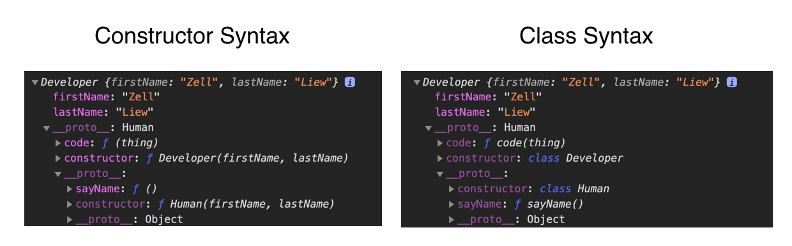

When people talk about Inheritance, they generally mean Classical Inheritance. It’s a process where you create a derivative class from another class. The derivative class is called a subclass.
This process can also be called subclassing.
Classical Inheritance looks like this in most programming languages:
class Thing extends AnotherThing {
// ...
}
This means:
Thing is derived from AnotherThing.
Thing should have all the properties and methods from AnotherThing.
You can overwrite AnotherThing's properties and methods in Thing
Classical Inheritance vs Prototypal Inheritance
Programmers like to compare Classical Inheritance vs Prototypal Inheritance. This comparison makes no sense within JavaScript alone. It only makes sense when you compare it to another programming language (like Java).
Why? Because JavaScript doesn’t have Classical Inheritance. In JavaScript, You can only inherit via:
Copy-pasting (Concatenative Inheritance)
Delegation via Prototypes (Prototypal Delegation/Prototypal Inheritance)
This remains true even if you use the extends keyword to extend classes in JavaScript.
Creating a derivative object in JavaScript
Let’s say you want to create a Developer. A Developer is a Human who can code. We can use the extends keyword to inherit all methods and properties from Human.
class Developer extends Human {
// ...
}
Let’s create an instance at this point.
const zell = new Developer('Zell', 'Liew')
You can see from this instance that:
It has a firstName and lastName property (uses Concatenative Inheritance)
It has a sayName method two levels up the Prototype Chain (uses Prototypal Inheritance)
So JavaScript doesn’t let you do Classical Inheritance. There’s no point discussing Classical vs Prototypal Inheritance if you’re concerned about writing better JavaScript.
What does Classical Inheritance look like in JavaScript? I don’t know. There’s no way to tell.
Understanding class and extends
We only wrote Developer extends Human so far. How did firstName, lastName get into Developer?
// What we wrote
class Developer extends Human {
// ...
}
firstName and lastName were copy-pasted into Developer because extends runs a constructor function behind the scenes. It looks like this:
class Developer extends Human {
constructor(firstName, lastName) {
super(firstName, lastName)
}
}
super refers to the Human. It calls Human's constructor inside Developer's constructor.
Note: If you omit constructor, the derivative class (Developer) will use parent class’s (Human) constructor automatically.
Adding properties and methods to a derivative class
You can add properties and methods to Developer in two ways:
Copy-pasting
Delegation via Prototypes
Adding properties with Copy-pasting
You can copy-paste properties into instances by writing the property inside a constructor function.
Let’s say a Developer knows how to code. We’ll add a code function inside the constructor.
class Developer extends Human {
constructor(firstName, lastName) {
super(firstName, lastName)
this.code = function (thing) {
console.log(`${this.firstName} coded ${thing}`)
}
}
}
We can create an instance. Notice the code method is copy-pasted into the instance.
const zell = new Developer('Zell', 'Liew')
We can call the code method and it will work.
zell.code('website')
Note: super must come first in the constructor function. You’ll get an error if you don’t write super first.
class Developer extends Human {
constructor(firstName, lastName) {
// Results in an error because super didn't come first
this.code = function (thing) {
console.log(`${this.firstName} coded ${thing}`)
}
super(firstName, lastName)
}
}
Adding properties with Prototypal Delegation
You can add a property via Prototypal Delegation by writing the property inside the class.
class Developer extends Human {
code (thing) {
console.log(`${this.firstName} coded ${thing}`)
}
}
Let’s create an instance.
const zell = new Developer('Zell', 'Liew')
Notice code is in the Prototype.
We can call code and it will work.
zell.code('website')
When should you Copy-paste? When should you Delegate?
You should Copy-paste when instances need their own unique values (like firstName and lastName).
You can Delegate when instances can share the same value. In the Developer example, we can delegate the code method. We can also delegate a jobTitle property (if we assume all developers are hired as developers).
class Developer extends Human {
jobTitle = 'developer',
code (thing) {
console.log(`${this.firstName} coded ${thing}`)
}
}
Creating Derivatives with the Constructor Syntax
Since Classes are syntactic sugars for Constructors, we should be able to create the same derivative constructor from a parent constructor.
Let’s learn to do this.
First, we’ll take a picture of a Developer instance created with a class. This will serve as our benchmark for recreating inheritance with constructor functions.
// Human class
class Human {
constructor (firstName, lastName) {
this.firstName = firstName
this.lastName = lastName
}
sayName () {
console.log(`${this.firstName} ${this.lastName}`)
}
}
// Developer class
class Developer extends Human {
code (thing) {
console.log(`${this.firstName} coded ${thing}`)
}
}
const zell = new Developer('Zell', 'Liew')
There are a couple of steps:
Create the Human constructor
Create the Developer constructor
Link Developer prototype to Human's Prototype.
Set Developer.prototype.constructor to Developer
Add methods to Developer.prototype
Creating the Human Constructor
First, we’ll create the Human constructor.
function Human (firstName, lastName) {
this.firstName = firstName
this.lastName = lastName
}
Each Human can say their name. We’ll create a sayName method in the prototype.
Human.prototype.sayName = function () {
console.log(`${this.firstName} ${this.lastName}`)
}
Creating the Developer Constructor
A Developer is a derivative of a Human, so Developer should inherit properties and methods from Human.
function Developer (firstName, lastName) {
// ... Inherit from Human
}
We can make Developer inherit from Human by calling the Human constructor.
Since Human uses this in the constructor, we need to change this to the Developer’s instance. We do this with call.
function Developer (firstName, lastName) {
Human.call(this, firstName, lastName)
}
Let’s pause and create a Developer instance at this point.
const zell = new Developer('Zell', 'Liew')
Let’s compare the Constructor syntax and Class syntax at this point.
You can see that:
Constructor instance has a Prototype that points to Object.
Class instance has a Prototype that points to Human.
Our Developer instance cannot use sayName yet because sayName is not part of Object's prototype. It is part of Human's prototype.
zell.sayName()
If we want to allow Developer instances to use sayName, we need to link the Developer’s Prototype to Human’s prototype.
Linking Developer’s Prototype to Human’s Prototype
The most obvious way is to set Developer.prototype to Human.prototype
// Don't do this
Developer.prototype = Human.prototype
If you do this, you’re saying both Developer.prototype and Human.prototype are the same object. If you mutate one prototype, the other prototype will also be mutated at the same time.
// Adds method to Developer prototype
Developer.prototype.code = function (thing) {
console.log(`${this.firstName} coded ${thing}`)
}
// Logs Human.prototype
console.log(Human.prototype)
`Human.prototype` mutated. It contains the `code` method.
The second way is to set Developer.prototype as an instance of Human. This is okay, but not ideal.
// This is okay, but not ideal.
Developer.prototype = new Human()
It’s not ideal because Developer instances will have undefined firstName and lastName in the Prototype.
const zell = new Developer('Zell, Liew')
Undefined firstName and lastName properties in the Prototype
We don’t want to add unnecessary properties to the prototype. To fix this, we need an intermediate constructor, which brings us to the third (and best) method.
The third method is to combine Methods 1 and 2. We’ll use an intermediary constructor to create the prototype we want.
Here’s what it looks like:
function InterimConstructor () {}
InterimConstructor.prototype = Human.prototype
Developer.prototype = new InterimConstructor()
This method is so important, JavaScript baked this process into a method called Object.create.
Here’s what Object.create does underneath the hood.
Object.create = function(object) {
function InterimConstructor () {}
InterimConstructor.prototype = object
return new InterimConstructor()
}
We can then link Developer’s prototype to Human’s prototype with Object.create.
// Right way to link prototypes
Developer.prototype = Object.create(Human.prototype)
Here’s a comparison between an instance with our current Constructor syntax and an instance with the Class syntax:
const zell = new Developer('Zell', 'Liew')
Add the constructor property
We want to add the constructor property in the Developer.prototype. This should point back to the Developer constructor.
Developer.prototype.constructor = Developer
With this, inheritance with the constructor syntax is complete. Here’s a comparison between the two instances now.
Adding methods into the Developer’s Prototype
Finally, we’ll add the code method to Developer.prototype.
Developer.prototype.code = function (thing) {
console.log(`${this.firstName} coded ${thing}`)
}

Overview of the process
Here’s all the code you need to create Human and Developer with the Constructor syntax.
// ========================
// Human Constructor
// ========================
function Human (firstName, lastName) {
this.firstName = firstName
this.lastName = lastName
}
Human.prototype.sayName = function () {
console.log(`${this.firstName} ${this.lastName}`)
}
// ========================
// Developer Constructor
// ========================
function Developer (firstName, lastName) {
Human.call(this, firstName, lastName)
}
Developer.prototype = Object.create(Human.prototype)
Developer.prototype.constructor = Developer
Developer.prototype.code = function (thing) {
console.log(`${this.firstName} coded ${thing}`)
}
Constructors vs Classes
Many people argue you shouldn’t use Classes because Classes are syntactic sugar over Constructors.
But the choice is obvious if you have to choose between a Constructor vs a Class. The Class syntax is much simpler. You need 2 blocks of code to create derivative objects. On the other hand, you need 5 blocks of code to create a derivative object from a Constructor.
We can then create a Developer instance by running the factory.
const zell = Developer('Zell', 'Liew')
Here’s a comparison between a Factory Function instance and a Class instance.
Here’s the major difference: Factory functions don’t use Prototypal Delegation. All properties are copied directly into the instance.
Why Factory Functions don’t use Prototypal Delegation
Factory Functions cannot use Prototypal Delegation by themselves. (I talked about this in the Inheritance lesson). They can only use Prototypal Delegation with one of the other three flavours.
If you need to use one of the other flavours, you might as well stick to that flavour instead.
A nicer syntax
Like OLOO, you can also use Object.assign to add multiple properties to the developer factory.